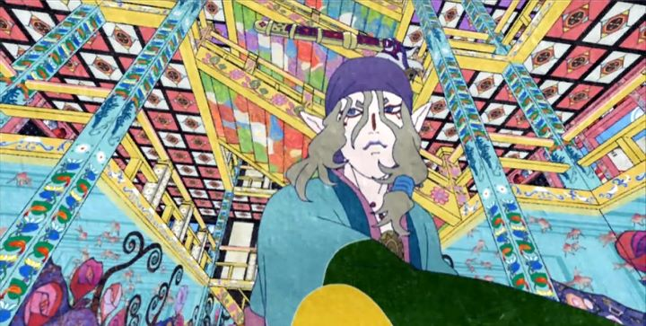

It's easy to confuse the generic name of "Mononoke" with a few different anime. Like the film "Princesss Mononoke," or the series "Bakemonogatari." This review is about the 2007 supernatural-mystery series "Mononoke," a one-of-a-kind show with an unusual origin: it's a spin-off of one popular arc in the anime anthology series "Ayakashi - Samurai Horror Tales." It's so visually unusual that it was unlikely to be released outside of Japan, the audience simply being too niche. And yet, it did, getting a DVD release in North America by CInedigm, a licensor who had released a few films by GKIDS: this would be one of their few experiments in releasing televised anime. Likely not a success, I'm happy they released it all the same."Mononoke" itself is also an anthology, made up of five separate story arcs across it's twelve episodes (one of which making reference to the original tale from "Ayakashi"). The shared plot device is comparable to shows like 2005's "Mushishi": a wandering, nameless Medicine Man visits a family or house in old Japan suffering from strange phenomenon. Not an ordinary doctor, the Medicine Man is experienced in dealing with "mononoke," a type of supernatural monster or spirit that haunts these patients. The Man has a process to unveil the spirit: he must uncover the "form," "truth" and "reason," things that often have roots in the patients themselves, revealing dramatic secrets about family relationships or cultures in the town. Right away, the visuals are striking. "Mononoke" uses complex patterns and colors to look like an elaborate Japanese painting, not like the simple ink paintings the culture is known for, but like the intricate designs on the backs of expensive kimono. 3D models for buildings and backgrounds helps make the effect possible. No other anime looks like this: the closest comparison might be 2004's "Gankutsuou," but with that's show's most complicated imagery cranked to 11, never letting up for a single shot. Ambitious thought it may be, it's not for everyone. It can be difficult to make out what you are looking at in any given shot, and characters don't look cute or attractive in the ways anime is known for (in fact, the exaggerated facial expressions of the patients are wild enough to add to the horror-element). I love bizzare experimentation in animation, but even I was conflicted, and a casual viewer I showed the series to wasn't sold on the design at all.The stories are thankfully interesting. They tend to be either horror or mysteries: a wide collection of ghost stories, told straight with only a bit of humor in some of the side characters. Seeing the complex web of secrets unfurl across multiple episodes makes for good television, although it's usually more about intrigue than genuine suspense, with 90% of content being talking and exposition. Mixed with the exhausting visuals, "Mononoke" can be tiring to watch. I generally wouldn't recommend binge-watching the show. If you limit yourself to one arc at a time, you have the equivalent to five short but fascinating feature films, not unlike "The Garden of Sinners." But even then, you'll probably want to take a break in-between, watching only one arc a week, like a BBC mini-series. Any more than that might feel like a chore. "Mononoke" might be one of the most ambitious anime series ever produced. But it's too ambitious for it's own good. Perhaps a light novel series would have been more appropriate, with a handful of complex images in between chapters? If the visuals were simpler, would the stories be more enjoyable to a wider audience? But would it be as impactful without that design? Even if I don't think it's successful as a whole, the result is still much better than most anime, and is worth watching all the way through simply for the experience. Worth watching, if only just once.
- "Ani" More reviews can be found at : https://2danicritic.github.io/ Previous review: review_Monogatari_Series_-_Second_Season Next review: review_Mononoke_the_Movie_-_Phantom_in_the_Rain